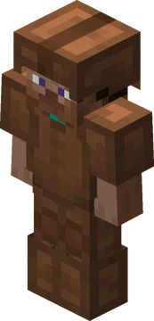
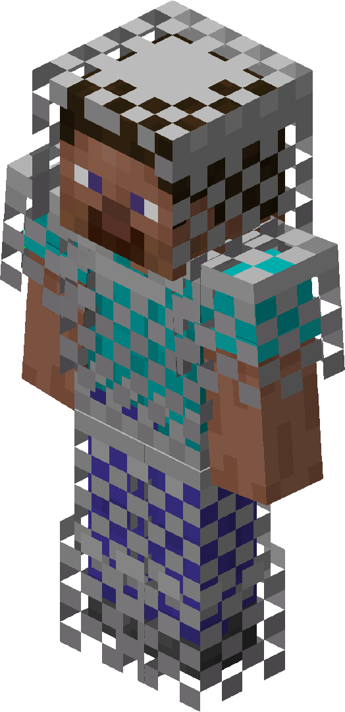
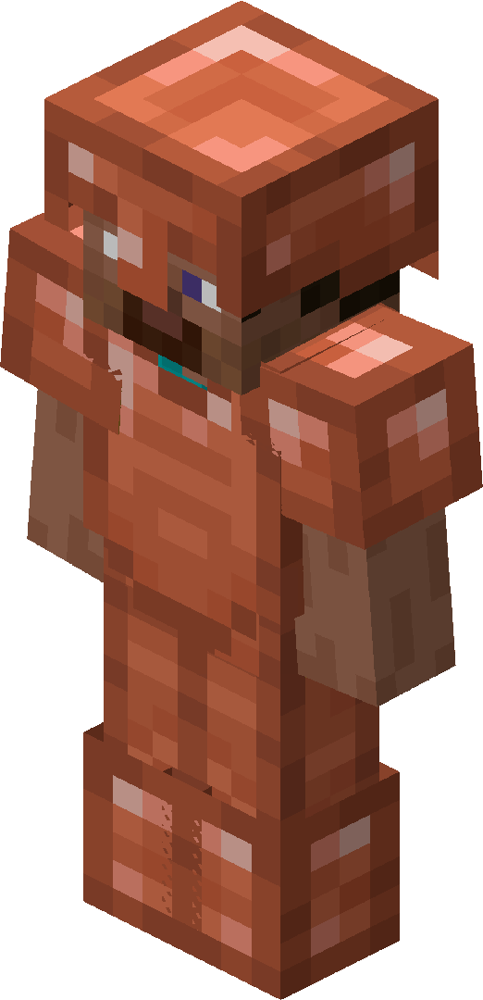
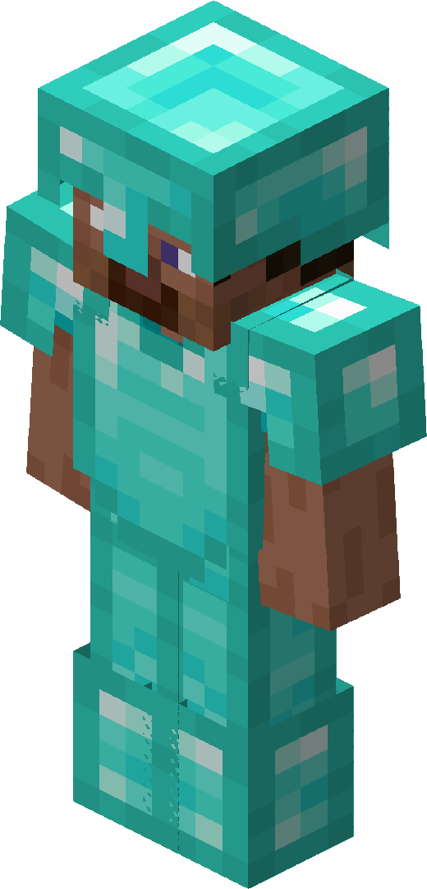
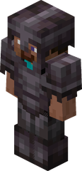

Armaduras
- couro

7 de proteção - linho*

12 de proteção - cobre

10 de proteção - ferro
 15 de proteção
15 de proteção - ouro
 11 de proteção
11 de proteção - diamante

20 de proteção
8 de resitência
- Netherita

20 de proteção
12 de resitência,4 de resitência a repulsão